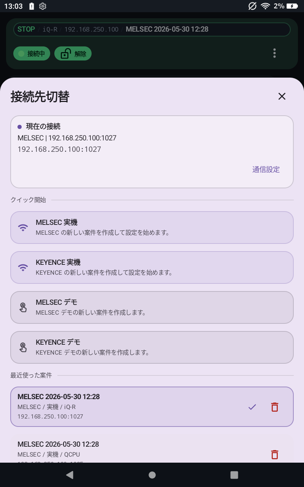

Connection
接続・プロジェクト
接続先切替、プロジェクト選択、通信設定、Demo Mock の値変化パターン、到達確認の操作を説明します。
接続先切替を開く
上部タイトル部分をタップすると接続先切替を開けます。通信設定はハンバーガーメニューではなく、このタイトル導線から開きます。
- 現在の接続内容を確認できます。
- MELSEC / KEYENCE の接続先を切り替えられます。
- 最近使ったプロジェクトから再選択できます。

接続先切替
通信設定で確認する項目
PLC 種別
MELSEC または KEYENCE を選択します。
CPU機種
接続する PLC の CPU機種を選択します。機種別の設定例は接続設定例で確認します。
IP / Port
PLC 側の Ethernet 設定に合わせます。
Transport
TCP または UDP を選択します。
ルーティング
MELSEC で必要な場合だけネットワーク、局番、ユニットI/O、マルチドロップを指定します。
KEYENCE 表示
KEYENCE ではデバイス表記を Normal または XYM から選択します。
Demo Mock 値変化
Demo Mock では、PLC 設定で監視値の変化パターンを選択できます。
到達確認
入力した通信設定で確認を実行し、結果とエラーメッセージを確認します。
PLC 側の Ethernet 設定、通信許可、リモートパスワードは 接続設定例 で確認します。
Demo Mock の値変化パターン
Demo Mock 接続では、実機 PLC なしで監視値が変化します。PLC 設定の 値変化パターン で、デモ表示やトラップ確認に使う変化の出方を選べます。
Sweep
現在の標準動作です。BIT は周期的に ON/OFF し、数値は 0 から 100 へ繰り返し変化します。
Pulse
短い瞬間的な変化を出します。立上り、立下り、変化検出のトラップ確認に向いています。
Wave
なめらかな波形で数値が上下します。タイムチャートで値の推移を見たいときに使います。
Step
段階的に値が切り替わります。しきい値付近の表示やトラップ条件を確認しやすいパターンです。
Hold
自動変化を止め、現在値を保持します。Demo Mock で書き込んだ値も、そのまま固定して確認できます。
この設定は端末アプリ側の Demo Mock 動作用です。プロジェクト JSON には含まれません。
PLC 種別ごとの設定
MELSEC
ルーティング、リモートパスワード、X/Y 表記は MELSEC ページで確認します。
MELSEC 設定を見る
KEYENCE
KEYENCE 表示、コメント読込、対応デバイスは KEYENCE ページで確認します。
KEYENCE 設定を見る
実機接続の注意
実機通信は設備の状態に影響する場合があります。接続前に対象 PLC、IP、ポート、Transport、通信許可、ネットワーク経路を確認してください。
接続結果の見方
- 接続成功時は上部ステータスに RUN/STOP、CPU、IP、プロジェクト名が表示されます。
- 未処理の CPU 状態は
-- と表示されます。
- 接続できない場合は、通信設定の 到達確認 を実行し、結果とエラーメッセージを確認してください。
- IP、ポート、TCP/UDP、端末のネットワーク接続を確認してください。
- MELSEC では、ルート指定とリモートパスワードも確認してください。
- PLC 側の通信設定や許可状態は、接続設定例の確認項目と照らし合わせてください。